1. Гуанчжоу — Шэньчжэнь — Гонконг
Мегаполисы, небоскрёбы и азиатский футуризм
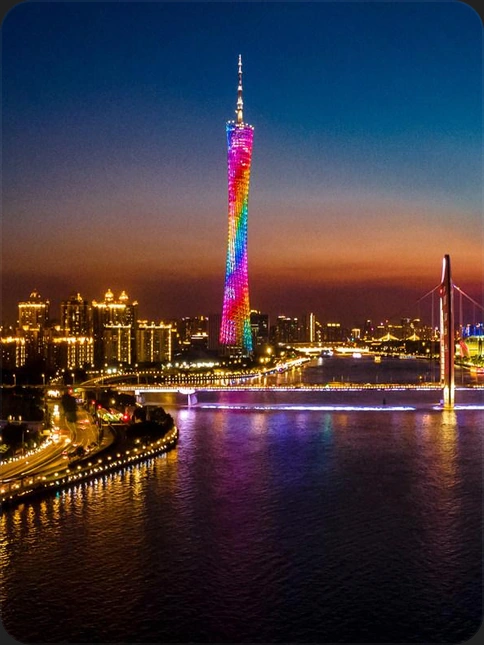
Гуанчжоу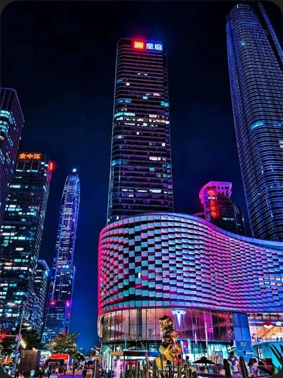
Шэньчжэнь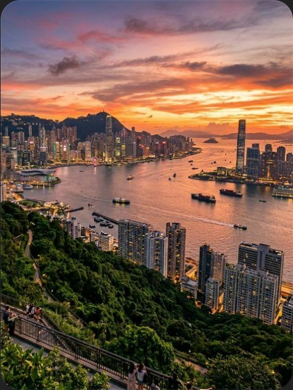
ГонконгГуанчжоу — традиционный Китай, старинные храмы, рынки и кантонская кухня.
Шэньчжэнь — город будущего, технологии, современная архитектура и дизайн.
Гонконг — небоскрёбы, неоновые улицы, горы, острова, панорамные бары и британское наследие.
+18…20 °CДнём, мягкая зима, комфортно гулять
Чего ждать: гастрономическое путешествие, много прогулок, три совершенно разных мегаполиса. Между городами — скоростные поезда.
2 дня Гуанчжоу · 1 день Шэньчжэнь · 5–6 дней Гонконг
2. Пекин — Сеул
Императорский Китай и стильная Южная Корея
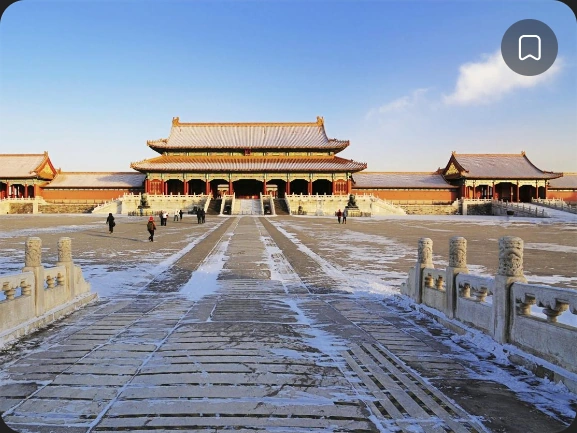
Пекин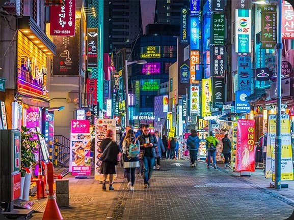
Сеул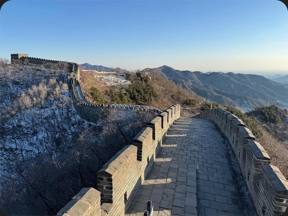
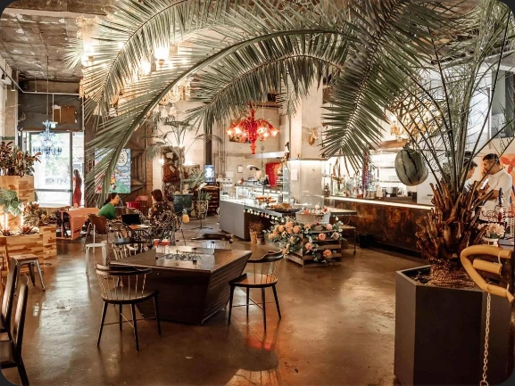
Пекин — Великая Китайская стена, Запретный город, императорские дворцы и старинные кварталы.
Сеул — модные кафе, корейская косметика, дизайн, галереи, дворцы, шопинг и стритфуд.
Около +2 °CДнём, ночью до −6…−9 °C. Возможен снег
Чего ждать: погружение в две совершенно разные культуры, история, мода и гастрономия. Понадобится зимняя одежда.
2–3 дня Пекин · 5–6 дней Сеул
3. Пхукет — Чэнду
Тропический отпуск и настоящий Китай
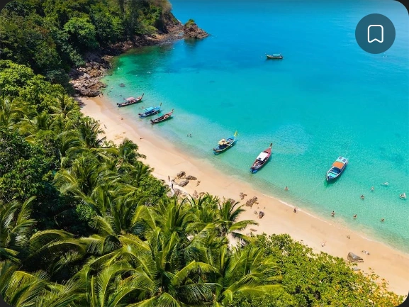
Пхукет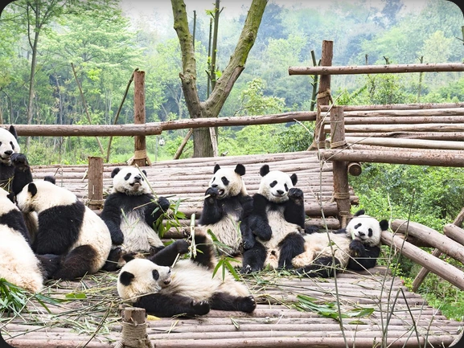
Чэнду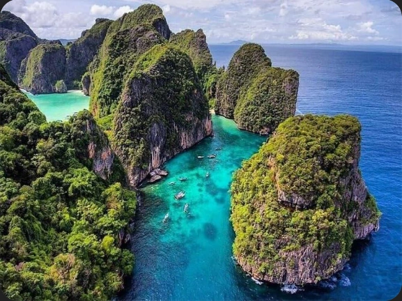
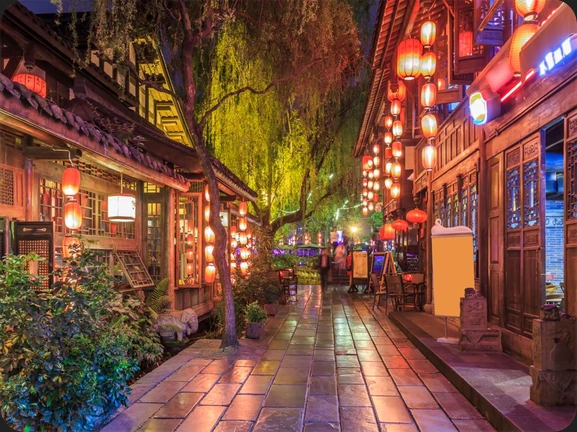
Пхукет — белоснежные пляжи, бирюзовое море, тропические острова, массажи и морепродукты.
Чэнду — панды, буддийские храмы, традиционные чайные, сычуаньская кухня и старинные улочки.
+30…33 °CПхукет, сухой сезон
Чего ждать: расслабленный отдых на море, а затем несколько дней знакомства с китайской культурой. На Пхукете высокий сезон.
5–6 дней Пхукет · 2–3 дня Чэнду